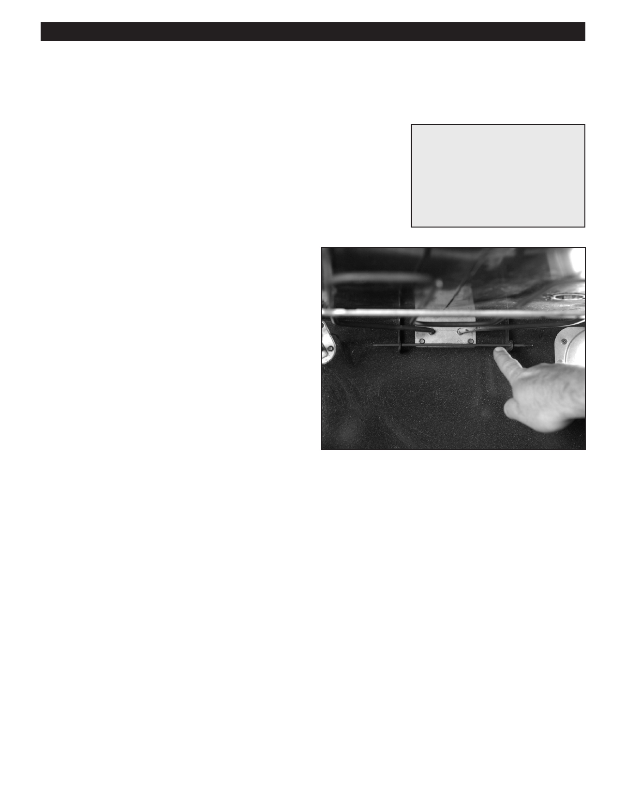

PA RT I C I PA N T R E S O U R C E G U I D E
Testing and Replacing the Oven Temperature Control
A faulty temperature control can result in inconsistent temperatures in the oven.
Safety
Tools and Materials Needed
Make sure the power to the oven is off.
Screwdriver
Use lockout/tagout procedures.
Insulated combination tool
Lockout/tagout device
Wear eye protection when working with electrical systems.
Multimeter
Wear rubber safety gloves.
Oven temperature control
How-to Steps
1. Turn off electricity to oven at main electrical panel.
2. Lockout/tagout the panel.
3. Open the oven control panel.
4. Locate the temperature control. If terminals are
discolored or burned, replace.
5. Use multimeter on RX1 setting to test:
• If temperature control has more than two terminals,
check manual to identify terminals to check.
• Disconnect wire from one terminal.
• Touch one probe to one terminal and the other probe
to the other terminal.
• Turn oven temperature control to 300˚F.
• If display doesn’t indicate continuity, replace
temperature control.
6. To replace, unseat capillary tube and remove through
back of oven. (Caution: Use rubber safety gloves and
goggles when handling capillary tube.)
7. Unscrew the two temperature control screws.
8. Flag, label, and disconnect wires from temperature
control.
9. Replace any burned wire connectors.
10. Attach wires to new control and screw control into place.
11. Push capillary tube through back and into oven.
(Caution: Use rubber safety gloves and goggles when
handling capillary tube.)
12. Reseat capillary tube.
13. Close oven control panel.
14. Turn on electricity.
15. Turn on power to oven and check operation.
55